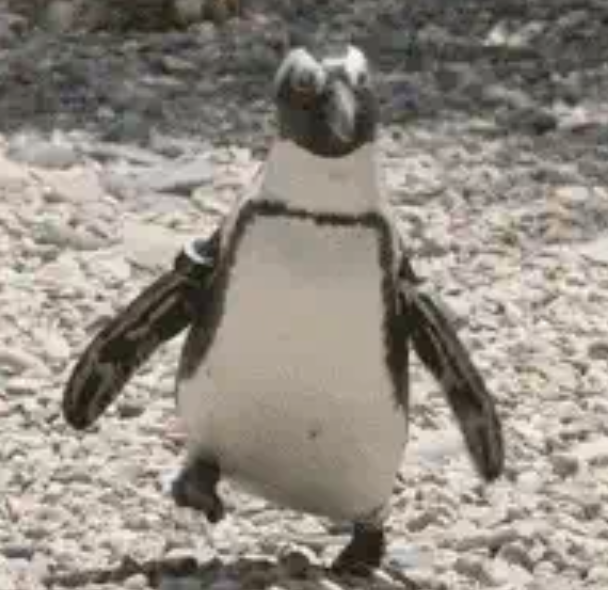

Dear seaweed,

The train conductor mumbles, “This stop is 36th Avenue… next stop is…” then trails off. The Penguiness presses her feet into the stained floor to stand up. She flexes her abdomen in anticipation of the train’s recoil as it stops. As the train’s wheels screech across the tracks, The Penguiness is on high f*cking alert. Her fingers are spread, her knees are bent, her abs are taut. Thanks to her mind-muscle connection, she does not fall. The Penguiness swings her massive tote over her shoulder and strides out the doors. She shuffles down the steps and pelvic thrusts the turnstile with enough force to get through in one go. Ze Penguiness heads home. As she waddles across the long street lined with a Papa Johns, a sketch club, and a brightly lit barber shop with black-haired men getting low fades, she focuses on the humdrum act of walking.
DO NOT TRUST ANYBODY. NOT EVEN UR OWN BODY!
It would be silly to think about everything that we are doing as we are doing them. I assume that’s what Murphy (our house dog) does; Murphy thinks “yummy yummy yummy eat eat eat” as he devours his salmon/brown rice kibble.
In contrast, I think about anything besides that which I am doing; I think about the show I am watching, what my plans are tomorrow, why I’m anxious, et cetera. It’s when pain (or discomfort) enters the picture, that you begin to think about your body. Pain puts you in the present.
My thoughts have certainly been more leg-oriented than normal since breaking my leg. But I recovered, and I was still thinking about my leg. It’s the chronic pain that came after the process of healing that led me to become an actively thinking walker. As I walk, I measure myself. I try to figure out what muscle I’m using in my right leg that I’m not using in my left leg, and vice versa. I imagine what parts of my feet press up against the ground first, what makes contact last. I try to locate the pain in my knee; try to figure out whether it’s because I’m using my quadricep enough or not. I see my knee on an imaginary x-ray. I untangle the sinews with my invisible finger. I imagine the fluid in my knee. I ponder the arthritis that could be building in my knee without my truly knowing.
I could not trust my body to figure itself out on its own. Imagine asking the planet to solve global warming on its own; it does its best, but it can only heal itself with what you give it. And so it is with your body. If, after I broke my leg in October 2022, I had given my body free reign, forfeiting the control my brain has over my muscles, I would still be limping because it’s easier to use my good leg than my bad. I would have made my good leg be big sibling, instead of twin to my bad leg.
This is why I am always thinking about walking as I am walking.